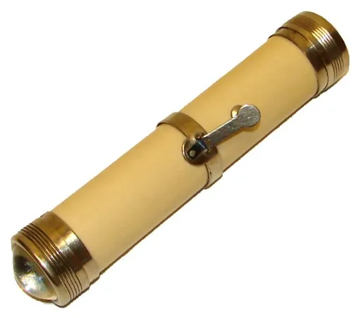

Reject an image by adding its slug to public/charades/charades-easy/reject.txt (append ! to keep it word-only), then re-run node scripts/genimages.mjs.
Feeding a baby feeding-a-baby Public domain · Pandy, great uncle of Vintage Lulu · sourceFireworks fireworks Public domain · Ondrejk · source

Flashlight flashlight CC BY 2.5 · http://en.wikipedia.org/wiki/Image:1899_Eveready_flashlight.jpg y http://www.flashlightmuseum.com/flashlight_view.cfm?item_number=EV00655 · sourceFlower flower CC BY-SA 3.0 · Alvesgaspar · source